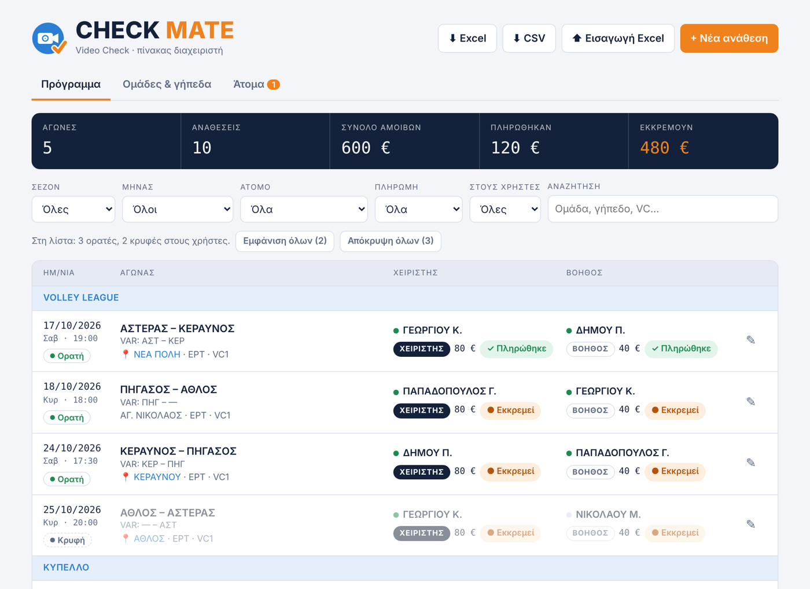
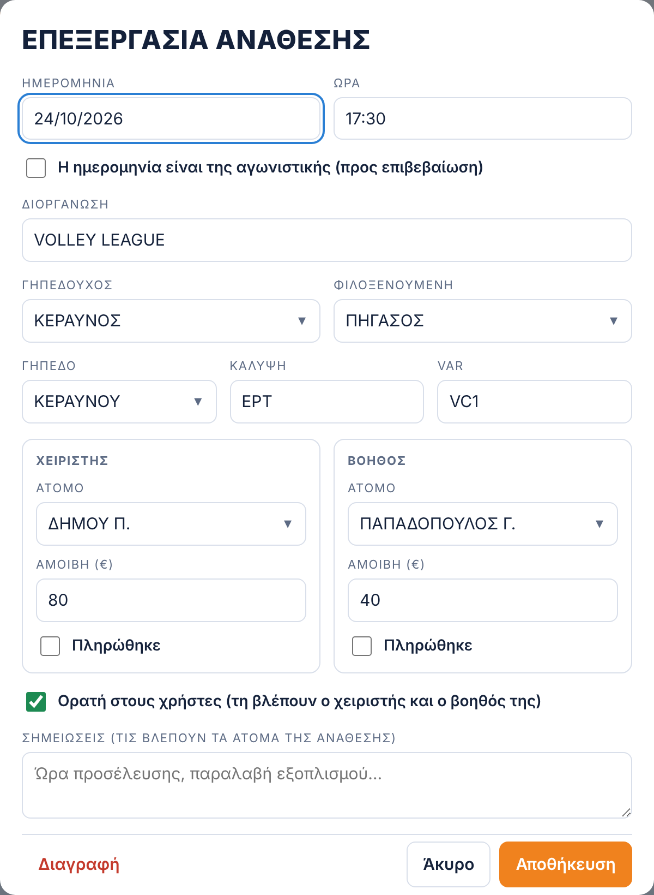
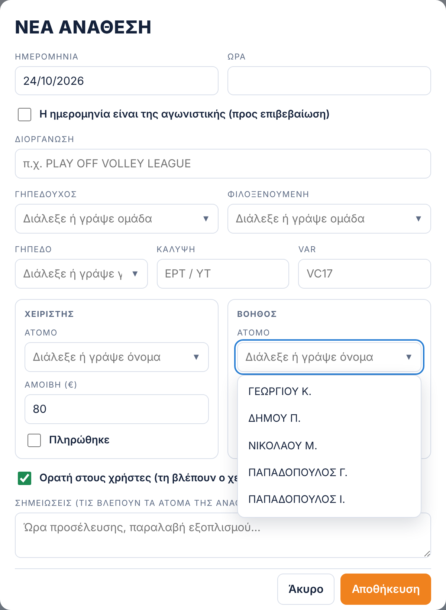
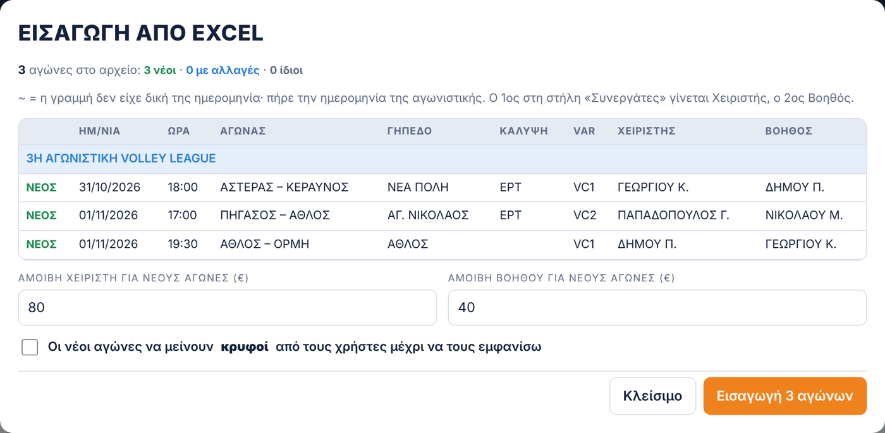
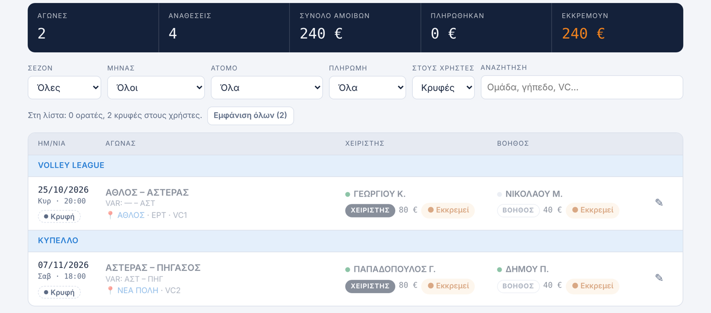
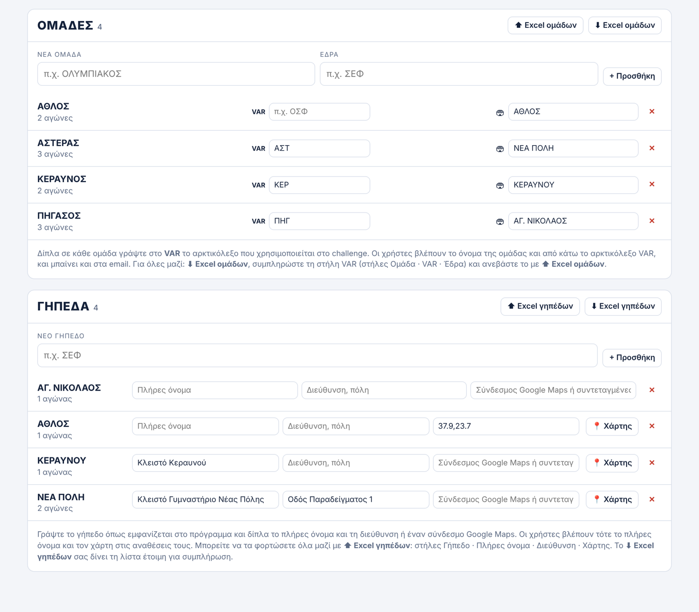
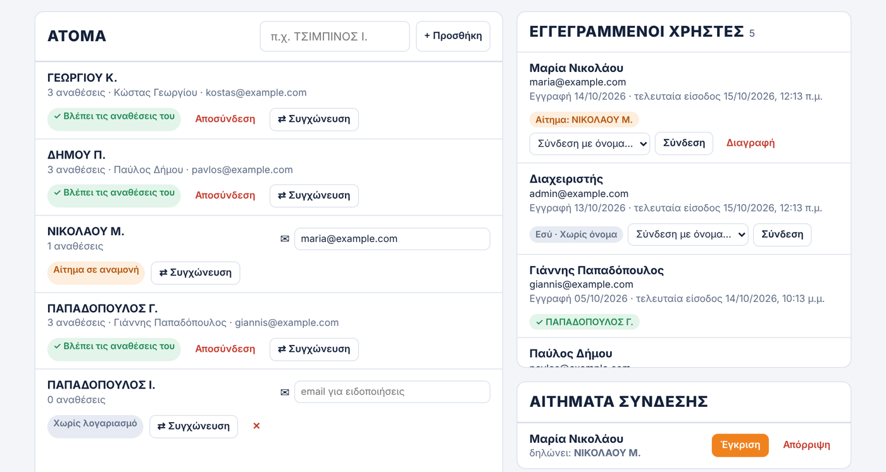
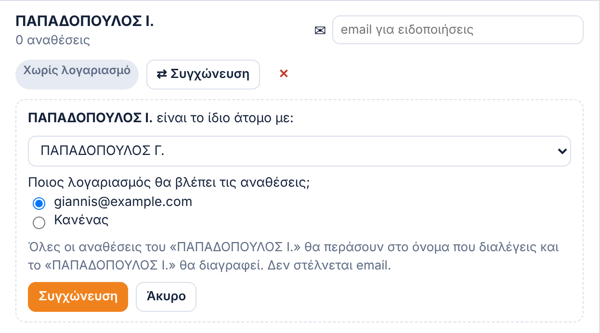
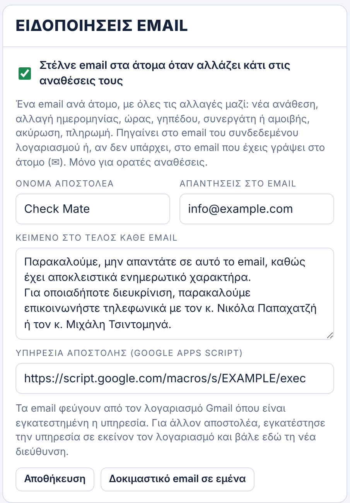
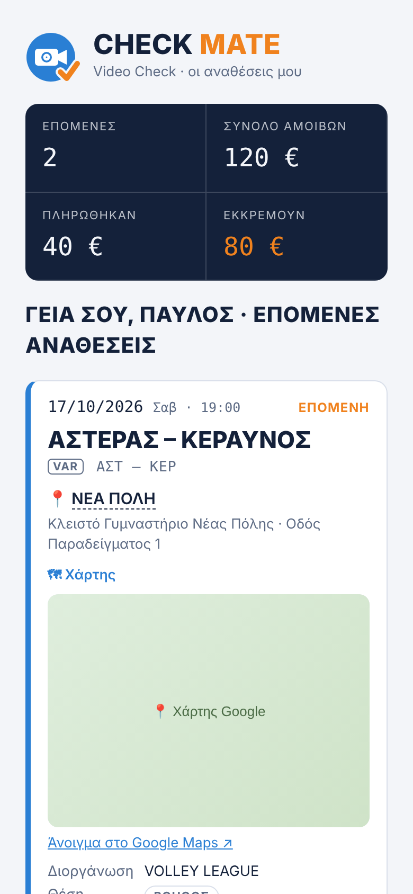

Ο διαχειριστής φτιάχνει το πρόγραμμα, ορίζει ποιος ορίζεται σε κάθε αγώνα ως Χειριστής ή Βοηθός, αποφασίζει τι βλέπουν οι χρήστες και σημειώνει τις πληρωμές. Οι χρήστες βλέπουν μόνο τις δικές τους αναθέσεις και παίρνουν email όταν κάτι αλλάζει.
Μπαίνετε στο Check Mate με τον λογαριασμό διαχειριστή. Υπάρχουν πέντε καρτέλες: Πρόγραμμα, Ομάδες & γήπεδα, Άτομα, Κωλύματα και Στατιστικά. Ο αριθμός δίπλα στα «Άτομα» δείχνει πόσα αιτήματα χρηστών περιμένουν έγκριση.
1 · Το πρόγραμμα

- Στην κορυφή: αγώνες, αναθέσεις, σύνολο αμοιβών, πληρωμένα και εκκρεμή, για ό,τι δείχνουν τα φίλτρα.
- Κάρτες / Πίνακας: ο διακόπτης πάνω από τη λίστα αλλάζει την εμφάνιση. Ο Πίνακας είναι σαν Excel: πατάτε σε ένα κελί (ημερομηνία, ώρα, ομάδες, γήπεδο, Χειριστής, Βοηθός, αμοιβή, πληρωμή, ορατή, σημειώσεις), το αλλάζετε και αποθηκεύεται μόλις φύγετε από αυτό. Στις στήλες με ▾ (διοργάνωση, ομάδες, γήπεδο, κάλυψη, VAR, Χειριστής, Βοηθός) ανοίγει λίστα με όλες τις επιλογές· γράφοντας, η λίστα φιλτράρεται, και στα άτομα φαίνεται «⚠ κώλυμα» ή «⚠ ίδια μέρα». Μπορείτε και να γράψετε κάτι νέο. Το Enter πάει στην από κάτω γραμμή. Τα email, το «Άλλαξε» και το «Το είδε» δουλεύουν όπως με τη φόρμα. Το ✎ στο τέλος ανοίγει την πλήρη φόρμα (και τη διαγραφή). Ο διακόπτης και ο Πίνακας υπάρχουν μόνο στον υπολογιστή· στο κινητό το πρόγραμμα φαίνεται πάντα σε Κάρτες.
- Αγωνιστική εβδομάδα: το πρόγραμμα ανοίγει στην τρέχουσα εβδομάδα. Με τα ◀ ▶ πάτε στην προηγούμενη ή την επόμενη, με το Τρέχουσα γυρίζετε στη σημερινή και με το Όλοι οι αγώνες βλέπετε όλη τη λίστα.
- Το είδε / Δεν το είδε ακόμα δίπλα στην αμοιβή: αν το άτομο έχει ανοίξει την εφαρμογή και έχει δει την επόμενη ανάθεσή του. Μετά από αλλαγή (π.χ. ώρας) γράφει «Δεν είδε την αλλαγή» μέχρι να την ξανανοίξει. Ο χρήστης δεν πατά τίποτα· κρατήστε πατημένο ή περάστε το ποντίκι για ημερομηνία και ώρα.
- ⚠ Κώλυμα δίπλα σε όνομα: το άτομο έχει δηλώσει ότι δεν μπορεί εκείνη τη μέρα.
- Φίλτρα: Σεζόν, Μήνας, Άτομο, Πληρωμή, «Στους χρήστες» (ορατές/κρυφές) και αναζήτηση.
- Σε κάθε αγώνα: ημερομηνία, ομάδες με το αρκτικόλεξο VAR από κάτω, γήπεδο (📍 ανοίγει τον χάρτη), χειριστής και βοηθός με αμοιβή και πληρωμή.
- Η πράσινη τελεία δίπλα σε όνομα σημαίνει ότι το άτομο έχει συνδεδεμένο λογαριασμό και βλέπει την ανάθεση.
- ● Εκκρεμεί / ✓ Πληρώθηκε: ένα πάτημα αλλάζει την πληρωμή.
- ✓ Πληρωμή όλων: διαλέξτε ένα Άτομο στα φίλτρα (και, αν θέλετε, Μήνα). Εμφανίζεται κουμπί με το πλήθος και το ποσό των απλήρωτων αγώνων του που έχουν ήδη γίνει. Ένα πάτημα και «Ναι» τους σημειώνει όλους πληρωμένους.
- ✎ ανοίγει τον αγώνα για αλλαγές ή διαγραφή.
2 · Νέα ανάθεση ή αλλαγή


- Πατήστε + Νέα ανάθεση (ή ✎ σε υπάρχοντα αγώνα). Στο κινητό είναι το στρογγυλό πορτοκαλί κουμπί + κάτω δεξιά, και τα κουμπιά Excel πάνω είναι μόνο εικονίδια (⬇ Excel, ⬆ Εισαγωγή).
- Συμπληρώστε ημερομηνία, ώρα, διοργάνωση, ομάδες, γήπεδο, κάλυψη και VAR.
- Στις θέσεις Χειριστής και Βοηθός διαλέξτε άτομο από τη λίστα ή γράψτε νέο όνομα. Η ένδειξη «⚠ ίδια μέρα» δείχνει ότι το άτομο έχει ήδη αγώνα εκείνη τη μέρα, και η «⚠ κώλυμα» ότι έχει δηλώσει πως δεν μπορεί.
- Αν αλλάξετε ώρα, ημερομηνία, γήπεδο ή άτομα, ο χρήστης βλέπει στην κάρτα του την ένδειξη ⚠ Άλλαξε μέχρι να πατήσει ΟΚ.
- Η αμοιβή μπαίνει αυτόματα (80 € / 40 €) και αλλάζει αν χρειαστεί.
- Τσεκάρετε Ορατή στους χρήστες για να τη δουν τα άτομα της ανάθεσης.
- Αποθήκευση.
Όταν διαλέγετε γηπεδούχο, το γήπεδο συμπληρώνεται από την έδρα της ομάδας. Αν υπάρχει ήδη ο ίδιος αγώνας την ίδια μέρα, η εφαρμογή σας το λέει.
3 · Εισαγωγή προγράμματος από Excel

- ⬆ Εισαγωγή Excel και διαλέξτε το αρχείο. Στήλες: ΗΜΕΡΟΜΗΝΙΑ · ΩΡΑ · ΓΗΠΕΔΟ · ΑΓΩΝΑΣ · ΚΑΛΥΨΗ · VAR · ΣΥΝΕΡΓΑΤΕΣ.
- Στους ΣΥΝΕΡΓΑΤΕΣ ο 1ος είναι ο Χειριστής και ο 2ος ο Βοηθός. Οι γραμμές-τίτλοι (π.χ. «3Η ΑΓΩΝΙΣΤΙΚΗ…») γίνονται η διοργάνωση.
- Η προεπισκόπηση δείχνει τι είναι ΝΕΟ, τι ΑΛΛΑΖΕΙ και τι μένει ΙΔΙΟ. Ελέγξτε τις αμοιβές και, αν θέλετε, τσεκάρετε «να μείνουν κρυφοί».
- Πατήστε Εισαγωγή.
Το νέο αρχείο δεν αντικαθιστά το παλιό. Συγχωνεύεται: οι νέοι αγώνες προστίθενται, όσοι άλλαξαν (ώρα, γήπεδο, άτομα) ενημερώνονται, και οι πληρωμές μένουν. Στα πλέι οφ κάθε αγώνας της σειράς ξεχωρίζει από την ημερομηνία του. Το πρόγραμμα της νέας σεζόν δεν αγγίζει ποτέ τους περσινούς αγώνες.
4 · Τι βλέπουν οι χρήστες: Ορατή / Κρυφή

- Κάθε χρήστης βλέπει μόνο τις δικές του αναθέσεις και μόνο τις Ορατές.
- Το κουμπί ● Ορατή / ● Κρυφή κάτω από την ημερομηνία αλλάζει μία ανάθεση.
- Πολλές μαζί: βάλτε φίλτρα (π.χ. Μήνας) και πατήστε Εμφάνιση όλων ή Απόκρυψη όλων.
- Τέλος σεζόν: διαλέξτε την περσινή στο φίλτρο Σεζόν → Απόκρυψη όλης της σεζόν. Δεν σβήνεται τίποτα και δεν στέλνεται email.
5 · Ομάδες & γήπεδα

- Ομάδες: δίπλα σε κάθε ομάδα γράψτε το VAR, το αρκτικόλεξο που μπαίνει στο challenge, και την έδρα (🏟). Οι χρήστες βλέπουν το όνομα της ομάδας και από κάτω το VAR. Πατώντας το χρωματιστό κουτάκι διαλέγετε το χρώμα του σήματος της ομάδας (κύκλος με το αρκτικόλεξο), που φαίνεται σε όλες τις κάρτες, και στους χρήστες. Αν δεν διαλέξετε, μπαίνει αυτόματα ένα χρώμα.
- Γήπεδα: γράψτε πλήρες όνομα, διεύθυνση ή σύνδεσμο Google Maps. Οι χρήστες βλέπουν τότε τον χάρτη στην ανάθεσή τους.
- Όλα μαζί με Excel: ⬇ Excel κατεβάζει τη λίστα, τη συμπληρώνετε και την ανεβάζετε με ⬆ Excel. Ομάδες: Ομάδα · VAR · Έδρα. Γήπεδα: Γήπεδο · Πλήρες όνομα · Διεύθυνση · Χάρτης.
- Αν η ίδια ομάδα ή το ίδιο γήπεδο έχει γραφτεί δύο φορές (π.χ. με διαφορετικά κεφαλαία ή τόνους), οι διπλές καταχωρίσεις ενοποιούνται αυτόματα όταν ανοίγετε την εφαρμογή.
- Πατήστε Tab μετά από κάθε αλλαγή για να αποθηκευτεί. Οι αναθέσεις των χρηστών ενημερώνονται αμέσως, χωρίς email.
6 · Άτομα και χρήστες

Πώς αποκτά πρόσβαση ένας συνεργάτης:
- Του στέλνετε τον σύνδεσμο της εφαρμογής.
- Κάνει εγγραφή και διαλέγει το όνομά του όπως είναι στο πρόγραμμα.
- Στο Αιτήματα σύνδεσης πατάτε Έγκριση. Από εκεί και πέρα βλέπει τις αναθέσεις του.
Στη σελίδα:
- Άτομα (αριστερά): όλα τα ονόματα του προγράμματος. «✓ Βλέπει τις αναθέσεις του» σημαίνει συνδεδεμένο λογαριασμό. Αποσύνδεση κόβει την πρόσβαση.
- ✉: για όποιον δεν έχει λογαριασμό, γράψτε email για να παίρνει ειδοποιήσεις.
- Εγγεγραμμένοι χρήστες: όλοι οι λογαριασμοί. Με Σύνδεση με όνομα… συνδέετε κάποιον χωρίς να περιμένετε αίτημα. Η Διαγραφή εμφανίζεται για όσους δεν είναι συνδεδεμένοι.
⇄ Συγχώνευση: το ίδιο άτομο με δύο ονόματα

Αν ένα άτομο υπάρχει με δύο ονόματα (π.χ. «ΠΑΠΑΔΟΠΟΥΛΟΣ Γ.» και «ΠΑΠΑΔΟΠΟΥΛΟΣ Ι.»):
- Πατήστε ⇄ Συγχώνευση στο λάθος όνομα.
- Διαλέξτε το σωστό όνομα.
- Διαλέξτε ποιος λογαριασμός θα βλέπει τις αναθέσεις.
- Συγχώνευση.
Όλες οι αναθέσεις περνούν στο σωστό όνομα και το λάθος διαγράφεται. Δεν στέλνεται email.
7 · Αμοιβές και ειδοποιήσεις email

Προεπιλεγμένες αμοιβές: Χειριστής 80 €, Βοηθός 40 €. Μπαίνουν σε κάθε νέα ανάθεση. Η Εφαρμογή στις υπάρχουσες αναθέσεις αλλάζει τα απλήρωτα.
Ειδοποιήσεις email: όταν αλλάζει μια ορατή ανάθεση (νέα, ώρα, γήπεδο, συνεργάτης, ακύρωση, πληρωμή), τα άτομα παίρνουν ένα email με όλες τις αλλαγές μαζί.
- Εδώ αλλάζετε όνομα αποστολέα, απαντήσεις στο email και το κείμενο στο τέλος κάθε email.
- Δοκιμαστικό email σε εμένα ελέγχει ότι όλα λειτουργούν.
- Για αγώνες που έχουν γίνει στέλνεται email μόνο για πληρωμή. Η απόκρυψη πολλών μαζί και οι συγχωνεύσεις δεν στέλνουν email.
- Όριο: περίπου 100 email την ημέρα.
8 · Εξαγωγή σε Excel
Το ⬇ Excel κατεβάζει τις αναθέσεις με τα τρέχοντα φίλτρα (π.χ. μία σεζόν ή έναν μήνα), σε φύλλα: Σύνοψη, Αναθέσεις, Ανά άτομο, Ανά μήνα, Ανά διοργάνωση, με σύνολα και πληρωμές.
9 · Κωλύματα
Οι χρήστες δηλώνουν, για αυτή και την επόμενη εβδομάδα, τις μέρες που δεν μπορούν ή ότι είναι διαθέσιμοι. Στην καρτέλα Κωλύματα:
- Διαλέξτε Εβδομάδα. Ανοίγει στην τρέχουσα.
- Στην κορυφή: πόσοι έχουν κώλυμα, πόσοι είναι διαθέσιμοι και πόσοι δεν δήλωσαν.
- Πίνακας ανά άτομο και μέρα: ✕ κώλυμα · ✓ διαθέσιμος · · δεν έχει δηλώσει, με τη σημείωση του χρήστη.
- ⚠ Αναθέσεις σε μέρα με κώλυμα: λίστα με αγώνες όπου έχετε βάλει κάποιον που δήλωσε ότι δεν μπορεί.
- ✉ Υπενθύμιση σε όσους δεν δήλωσαν: στέλνει email σε όσους δεν έχουν δηλώσει για την εβδομάδα. Ζητά επιβεβαίωση πριν φύγει.
10 · Στατιστικά
- Φίλτρα: Σεζόν, Μήνας, Διοργάνωση.
- Σύνολα: αναθέσεις, Χειριστής / Βοηθός, αμοιβές, πληρωμένα και εκκρεμή.
- Πίνακας ανά άτομο. Πατήστε μια στήλη για ταξινόμηση.
- ⬇ Excel στατιστικών: όλα σε αρχείο Excel, ανά άτομο, μήνα και διοργάνωση.
Κάθε χρήστης βλέπει τα δικά του στοιχεία στο πλαίσιο Τα στατιστικά μου.
11 · Αντίγραφο ασφαλείας
Μία φορά την εβδομάδα εμφανίζεται πάνω από τις καρτέλες η υπενθύμιση 💾. Πατήστε ⬇ Αντίγραφο σε Excel και κρατήστε το αρχείο σε ασφαλές μέρος (π.χ. Google Drive). Με το Αργότερα η υπενθύμιση ξαναεμφανίζεται σε 2 μέρες.
12 · Τι βλέπει ο χρήστης

- Τις επόμενες αναθέσεις του, με την πιο κοντινή σημειωμένη ΕΠΟΜΕΝΗ.
- Ομάδες με το VAR από κάτω, γήπεδο με πλήρες όνομα, διεύθυνση και 🗺 Χάρτη.
- Θέση, συνεργάτη, διοργάνωση, κάλυψη, σημειώσεις.
- Αμοιβή και αν πληρώθηκε, με σύνολα στην κορυφή.
- Τις παλιές αναθέσεις με «Προβολή προηγούμενων».
- ⚠ Άλλαξε όταν αλλάζετε κάτι σε ανάθεσή του.
- Τα πλαίσια Κωλύματα και Τα στατιστικά μου.
Δεν μπορεί να αλλάξει τις αναθέσεις. Για τον εαυτό του υπάρχει και το προσωπικό Ημερολόγιο, όπου μπαίνουν μόνες τους οι αναθέσεις που έχει κάνει. Το Ημερολόγιο δεν το βλέπει ο διαχειριστής.
Οι εφαρμογές μας
Τρεις ξεχωριστές εφαρμογές, με τον ίδιο λογαριασμό. Κάθε μία εγκαθίσταται χωριστά, με το δικό της εικονίδιο.
 Check MateΑναθέσεις αγώνων και πληρωμές.tsimpinosbv.github.io/checkmate/ΗμερολόγιοΤο προσωπικό σας αρχείο αγώνων και πληρωμών.tsimpinosbv.github.io/checkmate/imerologio.html
Check MateΑναθέσεις αγώνων και πληρωμές.tsimpinosbv.github.io/checkmate/ΗμερολόγιοΤο προσωπικό σας αρχείο αγώνων και πληρωμών.tsimpinosbv.github.io/checkmate/imerologio.html V.C. TipsΟδηγός στησίματος, tips και γήπεδα.tsimpinosbv.github.io/vctips/
V.C. TipsΟδηγός στησίματος, tips και γήπεδα.tsimpinosbv.github.io/vctips/Όλες μαζί, σε μία σελίδα: Check Mate Suite · tsimpinosbv.github.io
- Στο Suite μπαίνετε μία φορά με τον λογαριασμό σας και ανοίγετε όποια εφαρμογή θέλετε. Αρκεί να εγκαταστήσετε μόνο το Suite.
- Μέσα σε κάθε εφαρμογή, το στρογγυλό κουμπί κάτω αριστερά ανοίγει τις άλλες δύο. Το σπιτάκι γυρίζει στην αρχική σελίδα του Suite.
- Το κουμπί ⓘ Σχετικά στο κάτω μέρος δείχνει τον δημιουργό και στοιχεία επικοινωνίας.
Όταν στέλνετε έναν από αυτούς τους συνδέσμους σε Viber, WhatsApp ή email, εμφανίζεται κάρτα με το εικονίδιο και το όνομα της εφαρμογής.
Συχνές ερωτήσεις
| Ερώτηση | Απάντηση |
|---|---|
| Ο χρήστης δεν βλέπει μια ανάθεση | Είναι Ορατή; Έχει εγκριθεί και είναι συνδεδεμένος με το σωστό όνομα (πράσινη τελεία); |
| Δεν πήγε email | Έχει ο χρήστης λογαριασμό ή ✉ email; Είναι η ανάθεση ορατή; Δοκιμάστε «Δοκιμαστικό email». Κοιτάξτε και στα ανεπιθύμητα. |
| Το ίδιο άτομο με δύο ονόματα | ⇄ Συγχώνευση στα Άτομα. |
| Λάθος όνομα ομάδας ή γηπέδου | Διορθώστε τον αγώνα με ✎ και σβήστε το λάθος από τη λίστα (✕). |
| Ανέβασα ξανά το Excel | Δεν διπλασιάζεται τίποτα· ελέγξτε την προεπισκόπηση. |
| Τέλος σεζόν | Φίλτρο Σεζόν → Απόκρυψη όλης της σεζόν. Τα δεδομένα μένουν. |